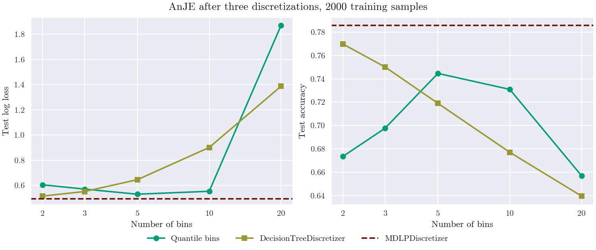

Note
Go to the end to download the full example code.
Supervised discretization before a model#
The models of the library discretize their continuous attributes into
n_bins bins of equal frequency (strategy="quantile"), without looking
at the class. skbn.MDLPDiscretizer and
skbn.DecisionTreeDiscretizer place the cut-points where the class
changes instead, and go before the model in a pipeline. The model that follows
is told that the discretized attributes are categorical
(categorical_features): it types an undeclared attribute from its values,
and integer codes with more than 20 distinct values would be taken as a
continuous attribute and discretized again. Here no attribute gets more than
20 bins, so the declaration does not change the results, but MDLP produces
that many on larger samples.
The data have four skewed attributes that change the class at one threshold
each, at different quantiles, and sixteen attributes of noise. The figure
compares skbn.AnJE (n_join=2) on its own bins with the same
model after each discretizer, for 2 to 20 bins. MDLP has no number of bins:
it keeps a cut only while the gain in class information pays for it under
the MDL criterion. AnJE(strategy="mdlp") applies the same discretization
inside the model, without a pipeline: its line coincides with that of the
MDLP pipeline.
No number of quantile bins places a cut on every threshold, so the model on its own quantile bins stays below the MDLP pipeline. MDLP also maps the noise attributes to a single bin, and the model then ignores them; the quantile bins keep them, and with them the noise of their joint estimates. The tree discretizer comes close to MDLP with two bins, the single cut that each informative attribute needs, and falls behind as it is allowed more leaves.

Informative attributes MDLP keeps: 100%
Noise attributes MDLP keeps: 0%
AnJE, quantile bins log loss [0.604 0.57 0.53 0.553 1.87 ]
DecisionTreeDiscretizer log loss [0.515 0.551 0.645 0.901 1.387]
MDLPDiscretizer log loss 0.492
AnJE, strategy="mdlp" log loss 0.492
# Author: The scikit-bayes Developers
# SPDX-License-Identifier: BSD-3-Clause
import matplotlib.pyplot as plt
import numpy as np
from sklearn.metrics import accuracy_score, log_loss
from sklearn.model_selection import train_test_split
from sklearn.pipeline import make_pipeline
from skbn import AnJE, DecisionTreeDiscretizer, MDLPDiscretizer
seeds = [0, 1, 2]
bins = [2, 3, 5, 10, 20]
n_train = 2000
n_features = 20
def make_data(seed, n=n_train + 5000):
rng = np.random.RandomState(seed)
informative = rng.exponential(2.0, size=(n, 4))
noise = rng.normal(size=(n, 16))
thresholds = np.array([1.0, 3.0, 0.5, 5.0])
signs = np.array([1, 1, -1, 1])
logit = 2.0 * ((informative > thresholds) * signs).sum(axis=1) - 1.0
y = (rng.rand(n) < 1 / (1 + np.exp(-logit))).astype(int)
return np.hstack([informative, noise]), y
# Every column leaves the discretizers as integer codes
categorical = list(range(n_features))
# Name, factory of n_bins, colour, marker; no marker for the models without
# a number of bins, drawn as horizontal lines (MDLP: dashed, the strategy of
# the model: dotted)
models = [
("AnJE, quantile bins", lambda b: AnJE(n_join=2, n_bins=b), "#009E73", "o"),
(
"DecisionTreeDiscretizer",
lambda b: make_pipeline(
DecisionTreeDiscretizer(n_bins=b),
AnJE(n_join=2, categorical_features=categorical),
),
"#999933",
"s",
),
(
"MDLPDiscretizer",
lambda b: make_pipeline(
MDLPDiscretizer(), AnJE(n_join=2, categorical_features=categorical)
),
"#661100",
None,
),
(
'AnJE, strategy="mdlp"',
lambda b: AnJE(n_join=2, strategy="mdlp"),
"#009E73",
None,
),
]
shape = (len(seeds), len(bins), len(models))
res_ll, res_acc = np.zeros(shape), np.zeros(shape)
kept = []
for i, seed in enumerate(seeds):
X, y = make_data(seed)
X_train, X_test, y_train, y_test = train_test_split(
X, y, train_size=n_train, random_state=seed
)
for j, n_bins in enumerate(bins):
for k, (name, factory, _, marker) in enumerate(models):
if marker is None and j > 0: # MDLP does not use n_bins
res_ll[i, j, k], res_acc[i, j, k] = res_ll[i, 0, k], res_acc[i, 0, k]
continue
clf = factory(n_bins).fit(X_train, y_train)
proba = clf.predict_proba(X_test)
res_ll[i, j, k] = log_loss(y_test, proba)
res_acc[i, j, k] = accuracy_score(y_test, proba.argmax(axis=1))
if name == "MDLPDiscretizer":
cuts = clf[0].cut_points_
kept.append([len(c) > 0 for c in cuts])
kept = np.mean(kept, axis=0)
print(f"Informative attributes MDLP keeps: {kept[:4].mean():.0%}")
print(f"Noise attributes MDLP keeps: {kept[4:].mean():.0%}")
mean_ll, mean_acc = res_ll.mean(axis=0), res_acc.mean(axis=0)
for k, (name, _, _, marker) in enumerate(models):
values = mean_ll[:, k] if marker else mean_ll[0, k]
print(f"{name:24s} log loss {np.round(values, 3)}")
fig, axes = plt.subplots(1, 2, figsize=(10, 4.2))
for ax, values, ylabel in zip(
axes, [mean_ll, mean_acc], ["Test log loss", "Test accuracy"]
):
for k, (name, _, color, marker) in enumerate(models):
if marker is None:
# The strategy of the model, dotted over the dashed MDLP pipeline
style, width = (":", 2.4) if name.startswith("AnJE") else ("--", 1.8)
ax.axhline(values[0, k], color=color, ls=style, lw=width, label=name)
else:
ax.plot(bins, values[:, k], marker=marker, color=color, label=name)
ax.set_xscale("log")
ax.set_xticks(bins, [str(b) for b in bins])
ax.minorticks_off()
ax.set_xlabel("Number of bins")
ax.set_ylabel(ylabel)
fig.legend(*axes[0].get_legend_handles_labels(), loc="outside lower center", ncol=4)
fig.suptitle(f"AnJE after three discretizations, {n_train} training samples")
plt.show()
Total running time of the script: (0 minutes 1.326 seconds)